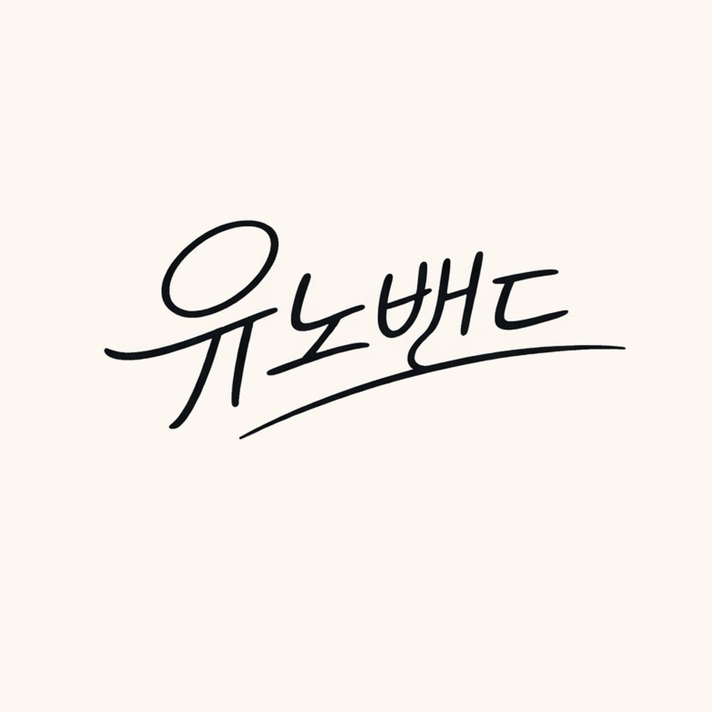
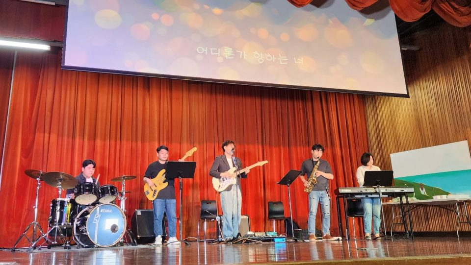
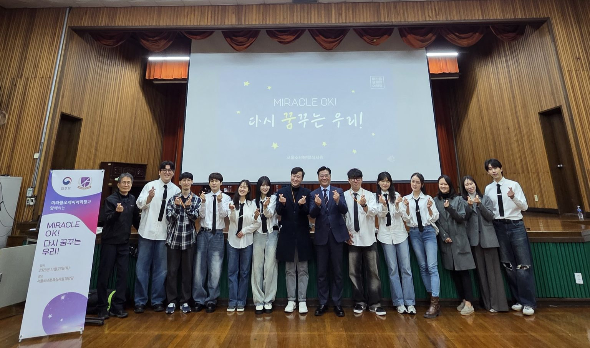

Beyond Academia
Music, service, and creative work that shape how I think about youth, motivation, community, and human connection.
Music
Lead vocalist and electric guitarist in You Know Band (유노밴드). I write and perform original music and use collaborative music-making as a space for creativity, communication, and connection.

T같은 여자, F같은 남자
T-like Woman, F-like Man
Our first single follows two people who speak about love in different ways and gradually learn to understand each other. I wrote the lyrics, co-composed the song, and played guitar.
Also on Apple Music, YouTube Music, Melon, and more platforms.
Youth Cultural-Arts Service
Participated in cultural-arts outreach for justice-involved adolescents at the Seoul Juvenile Classification Review Center, contributing band ensemble performance, original-song performance, storytelling, and an interview segment centered on resilience and renewed goals.

Music as a way to reconnect
The June program brought a band performance together with electronic violin, visual art, and other performances for adolescents at the center. The reporting describes an evening organized around participation, empathy, and the possibility of a new beginning.
Coverage: The AsiaN · LawIssue · Kyeongin Ilbo
Returning to the stage
The second visit continued the program’s theme of renewed goals. Alongside the band’s music, the November program included a video interview about dreams and stories of change, according to The AsiaN’s November report.

Teaching & Mentoring
Volunteer teacher and mentor for elementary- and middle-school-aged youth, with an emphasis on supportive relationships, emotional development, and positive participation.